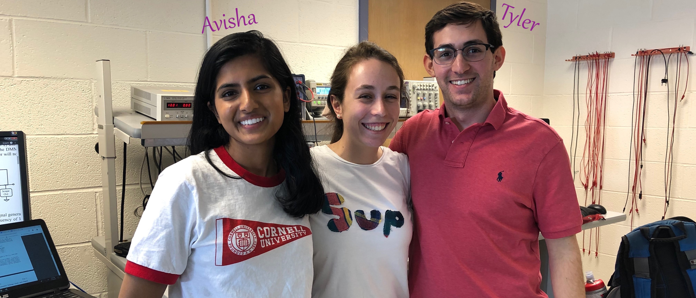

Smart Home Security System
Avisha Kumar (ak754) & Tyler Sherman (tss86)
Cornell University
ECE 5725: Embedded Operating Systems
Final Project Spring 2020
Last updated: 05/13/2020
Team Photo.
Video Demonstration.
Introduction.
Our Team.
Project Overview.
Project Objectives.
A succinct (3-4 line) summary of your problem statement. A succinct (3-4 line) summary of your problem statement. A succinct (3-4 line) summary of your problem statement.
Project Description.
This project is to build a Smart Home Security System that is cheap, robust, and easy to install. It will be battery powered with access to an Internet connection (Ethernet or WiFi) as the only requirement. The goal of this project is to provide safety and peace of mind to the owner at an affordable cost. The system should require minimal maintenance and be very easy to operate.
All peripherals and sensors will be connected to the Raspberry Pi 3 Model B device. The Raspberry Pi Camera Module will be mounted within a pan-tilt hardware kit with two degrees of rotation enabling 180º of side-to-side (pan) rotation and 150º of up-and-down (tilt) rotation. This rotation will be user controllable through an online web interface, greatly expanding the effective field of view. To better protect the premise, the camera will perform random rotation sweeps to guard against people exploiting the blind spots.
A Passive Infrared (PIR) sensor will be coupled with a computer vision algorithm to detect motion and categorize threats. To conserve battery life, the PIR sensor will serve as a trigger for when to initiate video capture. A user, however, can override this at any point in time by enabling the video live stream through the online interface. The computer vision algorithm will be incorporated to enable the ability to distinguish between a leaf blowing in the wind and a human moving around. This requires establishing a “threat” threshold and differentiating between the sizes of the objects in the frame. When a threat is detected, the user will receive an urgent email notification containing an image from the camera depicting the identified threat.
This system can be broken down into four parts:
- Hardware mounting system
- Motion detection algorithm
- User communication
- Web interface


Design & Testing.
Development Timeline.
Timeline!
Hardware.
Include design steps involved in the project.
Software.
Include design steps involved in the project.
Testing.
Describe testing you performed to confirm that development steps of the project performed as planned.
Problems Faced & Overcome.
Please include any issues you experienced as well as well as smooth progress in the various phases of your project.
Bill of Materials (BOM).
| Component | Vendor | Part Number | Cost |
|---|---|---|---|
| Raspberry Pi 3 Model B Rev 1.2 | Adafruit | 3055 | - |
| piCobbler Expansion Cable | Adafruit | 914 | - |
| 16GB Micro SD Card | SanDisk | - | - |
| Raspberry Pi Camera Board v2 - 8 Megapixels | Adafruit | 3099 | - |
| Passive Infrared (PIR) Motion Sensor | DIYmall | HC-SR501 | - |
| Pan/Tilt/Roll Camera Mount | Fat Shark | FSV1603 | $59.99 |
| Total Cost = | $59.99 |
Results & Conclusion.
Results.
Did everything perform as planned? Did your team meet the goals outlined in the description?.
Future Work.
What would you explore if you had more time to work on the project?
Conclusion.
What results did you project achieve? What did you discover that definitely did not work?
Acknowledgements.
We would like to thank Professor Joe Skovira and TAs Alex Hatzis, Caitlin Stanton, Canhui Yu and Sophie He for their help and guidance throughout the semester. Without them, this project would not have been nearly as successful. Additionally, we’d like to acknowledge the Linux and Raspberry Pi community at-large for providing a platform for low cost hardware projects and enabling hobbyists and tinkerers to pursue their passion.
References.
- Name
- RealVNC
- No-IP
- RPi.GPIO Library
- PiGPIO Library
- PiCamera Documentation
- Motion Project
- HC-SR501 Datasheet
- SG90 Datasheet
- Sending Email Using Google STMP
- The Mutt E-Mail Client
- Raspberry Pi Web Server using Flask
- The Flask Mega-Tutorial
- Asynchronous updates to a webpage with Flask and Socket.io
- RPi Intelligent Security System
- A Smart Door System
- Security Camera System with Human Detection
- Description
- Remote management
- Remote management
- GPIO library
- GPIO library (hardware PWM)
- Camera module
- Motion detection program
- PIR sensor
- SG90 servo motor
- Email using msmtp
- Email using mutt
- Flask web server
- Flask web server
- Flask and Socket.io
- ECE5725 reference project
- ECE5725 reference project
- ECE5725 reference project
Code Appendix.
GitHub Repository.
All of our project code, including the code for this website, is hosted publically on GitHub at: ECE 5725 Final Project. Code for this website is in the docs folder and the project source code is in the Project Code folder.
Source Code.
Due to the large number of software files, only core code is included here. The complete code directory is available in the GitHub repository. Account usernames and passwords have been redacted where applicable.
launch.sh
Script to elegantly launch the system
#!/bin/bash
#################################################
# Avisha Kumar (ak754) & Tyler Sherman (tss86) #
# ECE 5725: Embedded OS #
# 04/22/2020 #
# Lab 5: Final Project #
#################################################
# Use 'chmod +x launch.sh' to make executable
# Start PiGPIO daemon
# Daemon must be running for library to work
if pgrep pigpiod
then
echo 'PiGPIO daemon running'
else
sudo pigpiod
fi
# Launch rapid camera network stream
# Use absolute path
python3 ~/FinalProject/webStream.py &
# Launch PIR sensor
# Use absolute path
python3 ~/FinalProject/pir.py &
# Launch servo controller
# Use absolute path
python3 ~/FinalProject/FlaskWebServer/static/scripts/servoControl.py &
# Launch Motion program
# -c : full path & filename of config file
# -b : run in daemon mode
motion -b -c ~/FinalProject/Motion/motion.conf &
# Launch Flask WebServer
# Use absolute path
python3 ~/FinalProject/FlaskWebServer/website.py
#---------TERMINATION & CLEANUP---------#
# Kill the Motion program
if pgrep motion
then
sudo service motion stop
echo 'Motion program killed'
else
echo 'Motion program not running'
fi
# Kill the python processes
if pgrep python
then
killall python3
killall python
echo 'Python processes killed'
else
echo 'Python not running'
fi
# Kill the PiGPIO daemon
if pgrep pigpiod
then
sudo killall pigpiod
echo 'PiGPIO daemon killed'
else
echo 'PiGPIO daemon not running'
fi
website.py
Flask web server
#################################################
# Avisha Kumar (ak754) & Tyler Sherman (tss86) #
# ECE 5725: Embedded OS #
# 04/22/2020 #
# Lab 5: Final Project #
#################################################
from flask import Flask, render_template, request, url_for, copy_current_request_context
from flask_basicauth import BasicAuth
from flask_socketio import SocketIO, emit
from time import sleep
from threading import Thread, Event
import os
app = Flask(__name__)
# Forces username:password login for all pages
app.config['SECRET_KEY'] = 'XXXXXXXXXXXXXX' #redacted
app.config['DEBUG'] = False
app.config['BASIC_AUTH_USERNAME'] = 'XXXXX' #redacted
app.config['BASIC_AUTH_PASSWORD'] = 'XXXXX' #redacted
app.config['BASIC_AUTH_FORCE'] = True
basic_auth = BasicAuth(app)
# Turn Flask app into a SocketIO app
socketio = SocketIO(app, async_mode=None, logger=True, engineio_logger=True)
# Create thread for PIR sensor
thread = Thread()
thread_stop_event = Event()
# Function that asynchronously updates PIR status using named pipe
def pirSensor():
# initial setup
prevPirStatus = 0
setupCount = 0
while not thread_stop_event.isSet():
f = open("/home/pi/FinalProject/FlaskWebServer/static/scripts/pir.txt", "r")
pirStatus = int(f.read()[0:1])
f.close()
# PIR detected motion --> changed to high
if(prevPirStatus==0 and pirStatus==1):
socketio.emit('pirStatus', {'pir': 'Detected'}, namespace='/pir')
prevPirStatus = 1
# PIR has no detected motion --> changed to low
elif(prevPirStatus==1 and pirStatus==0 or pirStatus==0 and setupCount<=50):
socketio.emit('pirStatus', {'pir': 'Clear'}, namespace='/pir')
prevPirStatus = 0
setupCount += 1
socketio.sleep(1)
@app.route("/", methods=['GET', 'POST'])
def homepage():
templateData = {
}
# Respond to button presses
if request.method == 'POST':
if request.form['form'] == 'Shutdown':
os.system('exec ~/FinalProject/FlaskWebServer/static/scripts/shutdown.sh')
if request.form['form'] == 'left':
os.system('python ~/FinalProject/FlaskWebServer/static/scripts/servoLeft.py')
if request.form['form'] == 'right':
os.system('python ~/FinalProject/FlaskWebServer/static/scripts/servoRight.py')
if request.form['form'] == 'up':
os.system('python ~/FinalProject/FlaskWebServer/static/scripts/servoUp.py')
if request.form['form'] == 'down':
os.system('python ~/FinalProject/FlaskWebServer/static/scripts/servoDown.py')
if request.form['form'] == 'center':
os.system('python ~/FinalProject/FlaskWebServer/static/scripts/servoCenter.py')
return render_template('index.html', **templateData, scrollToAnchor='servo')
return render_template('index.html', **templateData)
@socketio.on('connect', namespace='/pir')
def test_connect():
# Need visibility of the global thread object
global thread
print('Client connected')
#Start PIR sensor thread only if thread has not been started
if not thread.isAlive():
print("Starting Thread")
thread = socketio.start_background_task(pirSensor)
@socketio.on('disconnect', namespace='/pir')
def test_disconnect():
print('Client disconnected')
if __name__ == '__main__':
socketio.run(app, host='0.0.0.0', port=8001, debug=False)
webStream.py
Create video feed from PiCamera
#################################################
# Avisha Kumar (ak754) & Tyler Sherman (tss86) #
# ECE 5725: Embedded OS #
# 04/22/2020 #
# Lab 5: Final Project #
#################################################
'''
- https://picamera.readthedocs.io/en/release-1.13/recipes2.html#web-streaming
- Run using python3
- 640x480 @ 60 fps streamed to port 8000
'''
import io
import picamera
import logging
import socketserver
from threading import Condition
from http import server
PAGE="""\
<html>
<head>
<title>PiCamera MJPEG Video Stream</title>
</head>
<body>
<img src="stream.mjpg" width="640" height="480" />
</body>
</html>
"""
class StreamingOutput(object):
def __init__(self):
self.frame = None
self.buffer = io.BytesIO()
self.condition = Condition()
def write(self, buf):
if buf.startswith(b'\xff\xd8'):
# New frame, copy the existing buffer's content and notify all
# clients it's available
self.buffer.truncate()
with self.condition:
self.frame = self.buffer.getvalue()
self.condition.notify_all()
self.buffer.seek(0)
return self.buffer.write(buf)
class StreamingHandler(server.BaseHTTPRequestHandler):
def do_GET(self):
if self.path == '/':
self.send_response(301)
self.send_header('Location', '/index.html')
self.end_headers()
elif self.path == '/index.html':
content = PAGE.encode('utf-8')
self.send_response(200)
self.send_header('Content-Type', 'text/html')
self.send_header('Content-Length', len(content))
self.end_headers()
self.wfile.write(content)
elif self.path == '/stream.mjpg':
self.send_response(200)
self.send_header('Age', 0)
self.send_header('Cache-Control', 'no-cache, private')
self.send_header('Pragma', 'no-cache')
self.send_header('Content-Type', 'multipart/x-mixed-replace; boundary=FRAME')
self.end_headers()
try:
while True:
with output.condition:
output.condition.wait()
frame = output.frame
self.wfile.write(b'--FRAME\r\n')
self.send_header('Content-Type', 'image/jpeg')
self.send_header('Content-Length', len(frame))
self.end_headers()
self.wfile.write(frame)
self.wfile.write(b'\r\n')
except Exception as e:
logging.warning(
'Removed streaming client %s: %s',
self.client_address, str(e))
else:
self.send_error(404)
self.end_headers()
class StreamingServer(socketserver.ThreadingMixIn, server.HTTPServer):
allow_reuse_address = True
daemon_threads = True
with picamera.PiCamera(resolution='640x480', framerate=60) as camera:
output = StreamingOutput()
camera.rotation = 180
camera.start_recording(output, format='mjpeg', quality=5)
try:
address = ('', 8000)
server = StreamingServer(address, StreamingHandler)
server.serve_forever()
finally:
camera.stop_recording()
msmtprc
Email configuration file
#################################################
# Avisha Kumar (ak754) & Tyler Sherman (tss86) #
# ECE 5725: Embedded OS #
# 04/09/2020 #
# Lab 5: Final Project #
#################################################
# User configuration file ~/.msmtprc
# msmtp is an SMTP client: https://marlam.de/msmtp/
# REFERENCES
# https://marvintan.com/posts/send-email-using-google-stmp/
# Use MSMTP because SSMTP doesn't work on Buster
# https://www.raspberrypi.org/forums/viewtopic.php?f=28&t=244147
# Set default values for all following accounts
defaults
# Use the mail submission port 587 instead of the SMTP port 25
port 587
# Always use TLS
tls on
tls_starttls on
tls_trust_file /etc/ssl/certs/ca-certificates.crt
# User specific log location, otherwise use /var/log/msmtp.log, however,
# this will create an access violation if you are user pi, and have not changes the access rights
logfile ~/.msmtp.log
# ----------------------------------------------- #
# Gmail service specifics #
# ----------------------------------------------- #
account gmail
# Host name of the SMTP server
host smtp.gmail.com
# From address
from ECE 5725 Security Camera
# Authentication: the password is given below
auth on
user XXXXXXXXXXXXXXXXXXXXXXX #redacted
password XXXXXXXXXXXXXXXXXXXXXXX #redacted
# Set a default account
account default : gmail
pir.py
Monitor the PIR sensor using callbacks
#!/usr/bin/env python
#################################################
# Avisha Kumar (ak754) & Tyler Sherman (tss86) #
# ECE 5725: Embedded OS #
# 04/20/2020 #
# Lab 5: Final Project #
#################################################
import RPi.GPIO as GPIO
import time
import subprocess
# Use Broadcom Numbering system
GPIO.setmode(GPIO.BCM)
PIR_PIN = 23
GPIO.setup(PIR_PIN, GPIO.IN)
# Define a threaded callback function to run in another thread when events are detected
def MOTION(PIR_PIN):
if GPIO.input(PIR_PIN): # GPIO23 == high
msg = 'echo 1 > /home/pi/FinalProject/FlaskWebServer/static/scripts/pir.txt'
subprocess.check_output(msg, shell=True)
email = 'mutt -e "set content_type="text/html"" tss86@cornell.edu -s "ALERT - Motion Detected!" < /home/pi/FinalProject/FlaskWebServer/static/scripts/text.html'
subprocess.check_output(email, shell=True)
#print("Motion detected!")
else: # GPIO23 == low
msg = 'echo 0 > /home/pi/FinalProject/FlaskWebServer/static/scripts/pir.txt'
subprocess.check_output(msg, shell=True)
#print("End of motion detection event")
# PIR needs 30-60 seconds to initialize
for i in range(30):
time.sleep(1)
print(i)
try:
# When a change edge is detected on GPIO23, regardless of whatever else
# is happening in the program, the function MOTION will be run
GPIO.add_event_detect(PIR_PIN, GPIO.BOTH, callback=MOTION)
while 1:
time.sleep(100)
except KeyboardInterrupt:
print("Quit")
GPIO.cleanup()
pir.js
Javascript to dynamically update PIR status
//#################################################
//# Avisha Kumar (ak754) & Tyler Sherman (tss86) #
//# ECE 5725: Embedded OS #
//# 04/23/2020 #
//# Lab 5: Final Project #
//#################################################
$(document).ready(function(){
var output = document.getElementById("pirStatus");
output.innerHTML = "";
//connect to the socket server.
var socket = io.connect('http://' + document.domain + ':' + location.port + '/pir');
//receive details from server
socket.on('pirStatus', function(msg) {
//console.log("PIR status = " + msg.pir);
//$('#pirStatus').html(msg.pir);
if(msg.pir == "Detected") {
var sentence = ''<h3 class='w3-xlarge w3-text-red'><b>WARNING - The PIR sensor has detected motion!</b></h3>"
var img = "<img src=../static/img/Intruder.png class='pirImage'>"
output.innerHTML = sentence + img;
} else {
var sentence = "<p>No motion has been detected.</p>"
var img = "<img src=../static/img/AllClear.jpg class='pirImage'>"
output.innerHTML = sentence + img;
}
});
});
servoControl.py
Controls the pan and tilt servos
#!/usr/bin/env python
#################################################
# Avisha Kumar (ak754) & Tyler Sherman (tss86) #
# ECE 5725: Embedded OS #
# 04/23/2020 #
# Lab 5: Final Project #
#################################################
# start daemon = sudo pigpiod
# stop daemon = sudo killall pigpiod
import os
import errno
import time
import pigpio # uses Broadcom Numbering system
# Named Pipe
FIFO = '/home/pi/FinalProject/FlaskWebServer/static/scripts/servoFifo'
try:
os.mkfifo(FIFO)
except OSError as oe:
if oe.errno != errno.EEXIST:
raise
# Define Constants
servo_pan = 19 # GPIO19
servo_tilt = 18 # GPIO18
loc_tilt = 0 # location of servo_tilt in duty cycle
loc_pan = 0 # location of servo_pan in duty cycle
freq = 50 # Hz
right = 75000 # 7.5%
up = 75000 # 7.5%
center = 90000 # 9.0%
left = 105000 # 10.5%
down = 105000 # 10.5%
step = 500
#------------------SERVO FUNCTIONS------------------------#
def pan_left():
global loc_pan
if loc_pan <= left - step:
loc_pan += step
pi.hardware_PWM(servo_pan, freq, loc_pan)
print('servo_pan location = '+str(loc_pan))
else:
print('ERROR: servo_pan already left')
time.sleep(0.1)
def pan_right():
global loc_pan
if loc_pan >= right + step:
loc_pan -= step
pi.hardware_PWM(servo_pan, freq, loc_pan)
print('servo_pan location = '+str(loc_pan))
else:
print('ERROR: servo_pan already right')
time.sleep(0.1)
def tilt_up():
global loc_tilt
if loc_tilt >= up + step:
loc_tilt -= step
pi.hardware_PWM(servo_tilt, freq, loc_tilt)
print('servo_tilt location = '+str(loc_tilt))
else:
print('ERROR: servo_tilt already up')
time.sleep(0.1)
def tilt_down():
global loc_tilt
if loc_tilt <= down - step:
loc_tilt += step
pi.hardware_PWM(servo_tilt, freq, loc_tilt)
print('servo_tilt location = '+str(loc_tilt))
else:
print('ERROR: servo_tilt already down')
time.sleep(0.1)
def center_servos():
global loc_pan
global loc_tilt
pi.hardware_PWM(servo_pan, freq, center)
pi.hardware_PWM(servo_tilt, freq, center)
loc_pan = center
loc_tilt = center
print('centering servos')
#---------------------------------------------------------#
# Setup & initialize PWM
pi = pigpio.pi()
pi.hardware_PWM(servo_tilt, freq, center)
pi.hardware_PWM(servo_pan, freq, center)
loc_tilt = center
loc_pan = center
# Normally, opening the FIFO blocks until the other end is opened also
# This way, once the pipe is closed, the code will attempt to re-open it, which will block until another writer opens the pipe
running = True
while running:
#print("Opening FIFO...")
with open(FIFO) as fifo:
#print("FIFO opened")
while True:
cmd = (fifo.read())[0:1]
if cmd == 'u':
tilt_up()
elif cmd == 'l':
pan_left()
elif cmd == 'c':
center_servos()
elif cmd == 'r':
pan_right()
elif cmd == 'd':
tilt_down()
elif cmd == 'q':
running = False
break
# closes FIFO to limit CPU usafe
if len(cmd) == 0:
#print("Writer closed")
break
#print('Read: "{0}"'.format(data))
# Stop & cleanup
pi.stop()